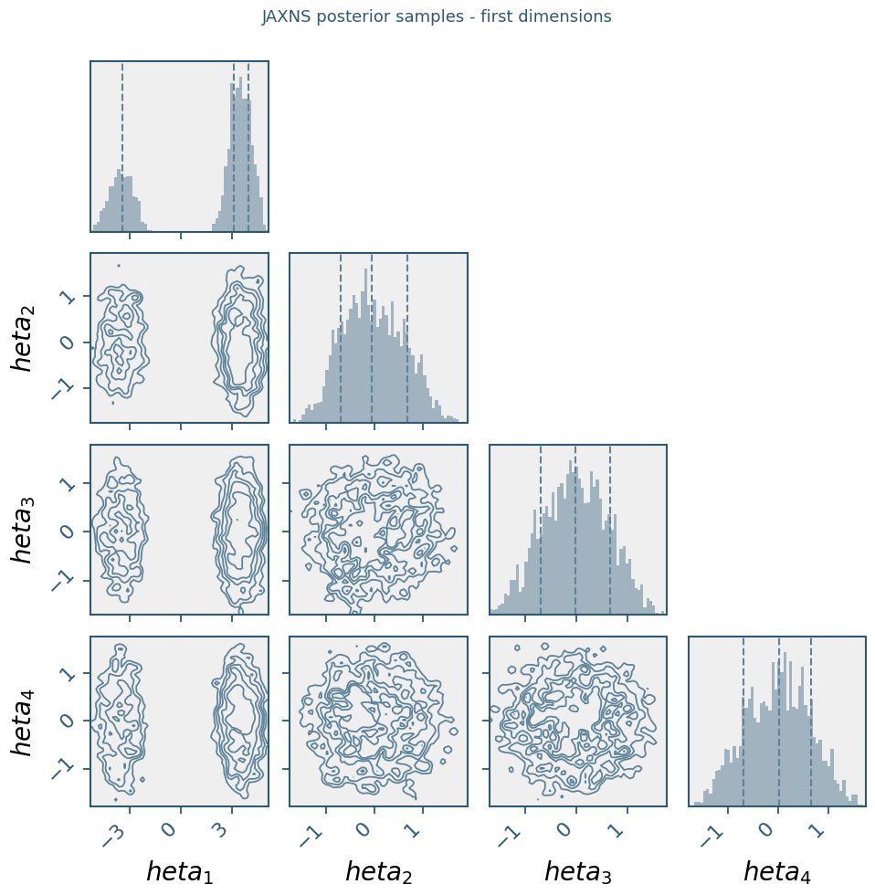

Twin Gaussian Shell Evidence with JAXNS + MorphZ#
This notebook demonstrates how to estimate the Bayesian evidence (log marginal likelihood, ln Z) for the twin Gaussian shell benchmark problem using:
JAXNS for nested-sampling posterior samples and an independent nested-sampling evidence estimate
MorphZ for evidence estimation from the JAXNS posterior samples

1. What We Are Computing#
The twin Gaussian shell is a standard multimodal benchmark from nested-sampling literature.
Parameters \(\theta \in \mathbb{R}^D\) live in a uniform prior box \([-L, L]^D\).
Prior: $\( p(\theta) = \frac{1}{(2L)^D} \)$
Likelihood (sum of two thin spherical shells, eq. 38 in the MorphZ paper): $\( \mathcal{L}(\theta) = \frac{1}{\sqrt{2\pi w^2}}\exp\!\left[-\frac{(|\theta - c_1| - r)^2}{2w^2}\right] + \frac{1}{\sqrt{2\pi w^2}}\exp\!\left[-\frac{(|\theta - c_2| - r)^2}{2w^2}\right] \)$
with \(c_1 = (-3.5, 0, \ldots)\), \(c_2 = (3.5, 0, \ldots)\), \(r = 2\), \(w = 0.1\).
The NumPyro version of this example uses manually initialised NUTS chains so both disconnected shells are represented. Here we swap that sampler for JAXNS, which is designed for multimodal nested sampling and also returns its own \(\ln Z\) estimate.
Evidence: $\( Z = \int p(y \mid \theta)\, p(\theta)\, d\theta \)$
2. Colab Setup#
Run the install cell only in a fresh Colab runtime or a dedicated virtual environment. JAXNS depends on the JAX/TFP/NumPy stack, and installing the latest stack into an existing PyMC/PyTensor environment can upgrade NumPy past versions that PyTensor accepts.
# Fresh Colab/runtime only. In an existing local environment, prefer a separate venv.
%pip -q install jaxns morphz corner
3. Problem Setup#
We define the twin-shell geometry and a JAX-compatible log-likelihood. JAXNS examples enable x64 for thin-shell likelihoods, so this notebook does the same before importing JAX arrays.
from importlib.metadata import version
from jax import config
config.update("jax_enable_x64", True)
import numpy as np
import jax
import jax.numpy as jnp
import matplotlib.pyplot as plt
import corner
import tensorflow_probability.substrates.jax as tfp
from jax import random
from jaxns import Model, NestedSampler, Prior, TerminationCondition, resample
from morphZ import evidence
tfpd = tfp.distributions
print('jax:', jax.__version__)
print('jaxns:', version('jaxns'))
# -- geometry -----------------------------------------------------------------
L = 6.0
ndim = 30 # change to 30 for the high-dimensional benchmark
r = 2.0
w = 0.1
c1 = jnp.array([-3.5] + [0.0] * (ndim - 1))
c2 = jnp.array([ 3.5] + [0.0] * (ndim - 1))
print(f'ndim = {ndim}, L = {L}, r = {r}, w = {w}')
print(f'c1[0] = {c1[0]:.1f}, c2[0] = {c2[0]:.1f}')
# -- JAX log-likelihood -------------------------------------------------------
def jax_loglikelihood(theta):
"""Twin Gaussian shell log-likelihood for a single parameter vector."""
log_norm = -0.5 * jnp.log(2.0 * jnp.pi * w ** 2)
log_exp1 = log_norm - 0.5 * ((jnp.linalg.norm(theta - c1) - r) / w) ** 2
log_exp2 = log_norm - 0.5 * ((jnp.linalg.norm(theta - c2) - r) / w) ** 2
return jnp.logaddexp(log_exp1, log_exp2)
jax: 0.10.0
jaxns: 2.6.9
ndim = 30, L = 6.0, r = 2.0, w = 0.1
c1[0] = -3.5, c2[0] = 3.5
4. JAXNS Model#
JAXNS separates the prior generator from the log-likelihood. The prior model yields a named theta variable from the same uniform box used in the NumPyro example.
def prior_model():
theta = yield Prior(
tfpd.Uniform(low=-L * jnp.ones(ndim), high=L * jnp.ones(ndim)),
name='theta',
)
return theta
model = Model(prior_model=prior_model, log_likelihood=jax_loglikelihood)
model.sanity_check(random.PRNGKey(0), S=100)
INFO:jaxns:Sanity check...
INFO:jaxns:Sanity check passed
5. Run JAXNS Nested Sampling#
JAXNS explores the prior volume under likelihood constraints, so we do not need to initialise one chain per shell. The sampler returns weighted posterior samples plus its direct nested-sampling estimate of \(\ln Z\).
rng_key = random.PRNGKey(0)
key_run, key_resample = random.split(rng_key)
max_samples = 120_000 if ndim <= 10 else 300_000
num_live_points = 1_000 if ndim <= 10 else 3_000
ns = NestedSampler(
model=model,
max_samples=max_samples,
num_live_points=num_live_points,
s=5,
k=0,
c=max(200, model.U_ndims * 20),
difficult_model=True,
gradient_guided=True,
parameter_estimation=True,
verbose=False,
)
term_cond = TerminationCondition(dlogZ=jnp.log1p(1e-2))
termination_reason, state = ns(key_run, term_cond=term_cond)
ns_results = ns.to_results(termination_reason=termination_reason, state=state)
ns.summary(ns_results)
print(f"JAXNS ln(Z): {float(ns_results.log_Z_mean):.4f} +/- {float(ns_results.log_Z_uncert):.4f}")
INFO:jaxns:Number of Markov-chains set to: 3000
/home/apokrypha/Local NT/git_26/MorphZ/.venv-jaxns/lib/python3.12/site-packages/jaxns/samplers/uni_slice_sampler.py:325: UserWarning: Gradient guided slice sampler is experimental and will likely change.
warnings.warn("Gradient guided slice sampler is experimental and will likely change.")
6. Draw Uniformly Weighted Posterior Samples#
JAXNS stores weighted nested-sampling samples. MorphZ expects ordinary posterior draws, so we resample using the posterior log-weights results.log_dp_mean.
n_posterior_samples = 8_000
posterior_samples = resample(
key_resample,
ns_results.samples,
ns_results.log_dp_mean,
S=n_posterior_samples,
)
theta_all = np.asarray(posterior_samples['theta'])
print('theta_all shape:', theta_all.shape)
print('theta_1 range across resampled posterior:', theta_all[:, 0].min().round(2), 'to', theta_all[:, 0].max().round(2))
print('Samples near c1 (theta_1 < 0):', (theta_all[:, 0] < 0).sum(), ' near c2 (theta_1 > 0):', (theta_all[:, 0] > 0).sum())
theta_all shape: (8000, 10)
theta_1 range across resampled posterior: -5.27 to 5.17
Samples near c1 (theta_1 < 0): 2455 near c2 (theta_1 > 0): 5545
7. Build a Log-Posterior Callable#
MorphZ requires a callable lp_fn(sample_vector) -> float that returns the same unnormalised log-posterior used during sampling. For this model, that is the bounded uniform log-prior plus the shell log-likelihood.
@jax.jit
def jax_logposterior(theta):
theta = jnp.asarray(theta)
in_prior = jnp.all((theta >= -L) & (theta <= L))
log_prior = -ndim * jnp.log(2.0 * L)
return jnp.where(in_prior, log_prior + jax_loglikelihood(theta), -jnp.inf)
batched_logposterior = jax.jit(jax.vmap(jax_logposterior))
def lp_fn(sample_vec):
"""Single-sample wrapper expected by MorphZ."""
return float(jax_logposterior(jnp.asarray(sample_vec)))
8. Pack Samples into a 2D Array#
MorphZ expects post_samples of shape (n_draws, n_parameters) and a matching array of log-posterior values.
post_smp = theta_all
lp = np.asarray(batched_logposterior(jnp.asarray(post_smp)))
print('post_smp shape:', post_smp.shape)
print('lp shape: ', lp.shape)
print('lp range: ', lp.min().round(2), 'to', lp.max().round(2))
post_smp shape: (8000, 10)
lp shape: (8000,)
lp range: -30.6 to -23.47
9. Posterior Corner Plot#
We plot the first 4 dimensions to verify that both shells are represented in the samples.
\(\theta_1\) should show two clusters around \(-3.5\) (shell 1) and \(+3.5\) (shell 2);
\(\theta_2, \theta_3, \theta_4\) should each be centred near zero.
%matplotlib inline
def styled_corner(samples, labels=(r"$x_1$", r"$x_2$")):
import numpy as np
import matplotlib.pyplot as plt
import corner
color = "#5f8399"
facecolor = "#efefef"
edgecolor = "#2d5872"
fig = corner.corner(
samples,
labels=list(labels),
bins=60,
color=color,
quantiles=[0.16, 0.50, 0.84],
show_titles=False,
smooth=1.0,
smooth1d=None,
plot_datapoints=False,
plot_density=False,
fill_contours=False,
no_fill_contours=True,
levels=[0.30, 0.50, 0.68, 0.86, 0.95],
hist_kwargs={
"density": True,
"histtype": "stepfilled",
"alpha": 0.55,
"linewidth": 1.5,
},
contour_kwargs={"linewidths": 1.3},
label_kwargs={"fontsize": 20},
max_n_ticks=4,
)
ndim_plot = samples.shape[1]
axes = np.array(fig.axes).reshape((ndim_plot, ndim_plot))
for i in range(ndim_plot):
for j in range(ndim_plot):
ax = axes[i, j]
ax.set_facecolor(facecolor)
for spine in ax.spines.values():
spine.set_color(edgecolor)
spine.set_linewidth(1.5)
ax.tick_params(axis="both", colors=edgecolor, width=1.3, length=6, labelsize=16)
for ax in axes[-1, :]:
for label in ax.get_xticklabels():
label.set_rotation(45)
label.set_ha("right")
for ax in axes[:, 0]:
for label in ax.get_yticklabels():
label.set_rotation(45)
label.set_va("center")
return fig
n_plot_dims = min(4, ndim)
plot_labels = [rf'$ heta_{{{i+1}}}$' for i in range(n_plot_dims)]
fig = styled_corner(post_smp[:, :n_plot_dims], labels=plot_labels)
fig.suptitle('JAXNS posterior samples - first dimensions', y=1.01, fontsize=13, color="#2d5872")
plt.tight_layout()
plt.show()
mask_shell1 = post_smp[:, 0] < 0
mask_shell2 = ~mask_shell1
print(f'Shell 1 samples: {mask_shell1.sum()} | Shell 2 samples: {mask_shell2.sum()}')

Shell 1 samples: 2455 | Shell 2 samples: 5545
10. Estimate ln(Z) with MorphZ#
results = evidence(
post_samples=post_smp,
log_posterior_function=lp_fn,
log_posterior_values=lp,
n_resamples=4000,
thin=2,
morph_type='2_group',
kde_bw='silverman',
output_path='jaxns_gaussian_shell',
n_estimations=1,
verbose=False,
plot=False,
show_progress=True,
overwrite_path=True,
)
results = np.asarray(results)
lnz_est = results[:, 0]
lnz_err = results[:, 1]
true_lnZ = {10: -14.59, 30: -60.13}.get(ndim)
print(f'MorphZ mean ln(Z): {lnz_est.mean():.4f} +/- {lnz_err.mean():.4f}')
print(f'JAXNS mean ln(Z): {float(ns_results.log_Z_mean):.4f} +/- {float(ns_results.log_Z_uncert):.4f}')
if true_lnZ is not None:
print(f'True ln(Z) D={ndim}: {true_lnZ}')
print(f'MorphZ residual: {lnz_est.mean() - true_lnZ:+.4f}')
print(f'JAXNS residual: {float(ns_results.log_Z_mean) - true_lnZ:+.4f}')
INFO:morphZ.morph:Using Morph_Group for proposal distribution.
INFO:morphZ.morph:Group file not found at jaxns_gaussian_shell/params_2-order_TC.json. Running total correlation computation...
INFO:morphZ.morph:Computing TC with 8 workers.
INFO:morphZ.Nth_TC:Top 10 MI pairs:
INFO:morphZ.Nth_TC: param_5 — param_8 : 0.040009
INFO:morphZ.Nth_TC: param_4 — param_9 : 0.038357
INFO:morphZ.Nth_TC: param_8 — param_9 : 0.036314
INFO:morphZ.Nth_TC: param_1 — param_4 : 0.035402
INFO:morphZ.Nth_TC: param_4 — param_6 : 0.034934
INFO:morphZ.Nth_TC: param_5 — param_9 : 0.034812
INFO:morphZ.Nth_TC: param_1 — param_5 : 0.033579
INFO:morphZ.Nth_TC: param_1 — param_6 : 0.033233
INFO:morphZ.Nth_TC: param_5 — param_7 : 0.032996
INFO:morphZ.Nth_TC: param_4 — param_7 : 0.032842
INFO:morphZ.Nth_TC:All MI pairs saved to jaxns_gaussian_shell/params_2-order_TC.json
INFO:morphZ.morph:BW file not found at jaxns_gaussian_shell/bw_silverman_2D.json. Running Bw with silverman...
INFO:morphZ.bw_method:Bandwidths saved to jaxns_gaussian_shell/bw_silverman_2D.json
INFO:morphZ.bw_method:Processed 5 groups and 0 single parameters
Number of evaluated proposed samples: 4000/4000
INFO:morphZ.bridge:Filtered proposal samples: 3959 valid samples out of 4000 total samples.
INFO:morphZ.bridge:iteration: 1 log(z) old: -14.581705900253546 log(z) New: -14.720986062849693
INFO:morphZ.bridge:iteration: 2 log(z) old: -14.720986062849693 log(z) New: -14.725796179162032
INFO:morphZ.bridge:Converged in 2 iterations. log(z): -14.7210 +/-: 0.0248
MorphZ mean ln(Z): -14.7210 +/- 0.0248
JAXNS mean ln(Z): -13.2119 +/- 0.1423
True ln(Z) D=10: -14.59
MorphZ residual: -0.1310
JAXNS residual: +1.3781
11. Summary#
The key steps for using JAXNS + MorphZ on a multimodal problem are:
Step |
What to do |
|---|---|
Model |
Define a JAXNS |
Sampling |
Run |
Resample |
Convert weighted nested-sampling samples to posterior draws with |
Check |
Corner plot to confirm both modes are represented in the samples |
Log-posterior |
Use the same unnormalised prior-plus-likelihood target for |
Evidence |
Pass |
This example keeps JAXNS’ direct nested-sampling \(\ln Z\) estimate in the output so it can be compared against MorphZ on the same posterior sample source.